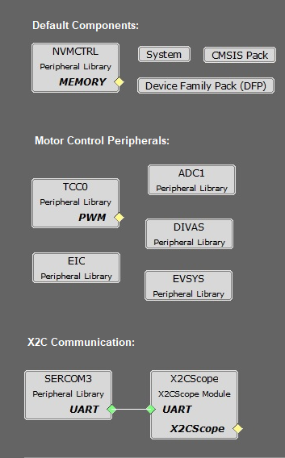

The following project graph shows the MPLAB Harmony components that are included in this application:
acim_vhz_sam_c21

Components Used
TCC0:
- Configured to generate 3 pairs of complimentary PWM signals at a frequency of 20 kHz in "Dual Slope PWM with interrupt and event when the counter = ZERO".
- Event output is enabled, which is generated when the counter reaches ZERO.
- Dead-time is enabled and set to 1 µs.
- Non-recoverable Fault is enabled on EV0. When an event is detected on EV0, all PWM channels are held low.
ADC1:
- ADC1 operates to read the Potentiometer Speed Reference.
- The ADC is hardware triggered by an event generated from the TCC0.
- Enable Ready interrupt is generated by ADC1.
EIC:
- EIC Channel 2: External Interrupt Controller detects the hardware over current fault input and generates a non-recoverable fault event for the TCC0, thereby shutting down the PWM in the event of an over-current fault.
- EIC Channel 11: External Interrupt Controller detects the Start and Stop push button command.
EVSYS:
- Event System acts as a moderator between the event generator and event users.
- Event generated by the TCC0 when the counter reaches ZERO, is used by the ADC1 as a hardware trigger source via the Event System.
- Event generated by the EIC upon over-current fault, is used by the TCC0 as a non-recoverable fault event via the Event System.
DIVAS:
- This project uses "Divide and Square Root Accelerator" to perform 32-bit signed and unsigned division and 32-bit unsigned square root operations.
- DIVAS is set to overload "Divide - / " operator i.e. c = a / b; would use DIVAS accelerator for division without using a special API. However, the square root operation would still require a special API. Refer to the DIVAS help for more details.
SERCOM3:
- Configured in USART mode and is set to operate at 115200 bps.
- This USART channel is used by the X2CScope plugin to plot or watch global variables in run-time.